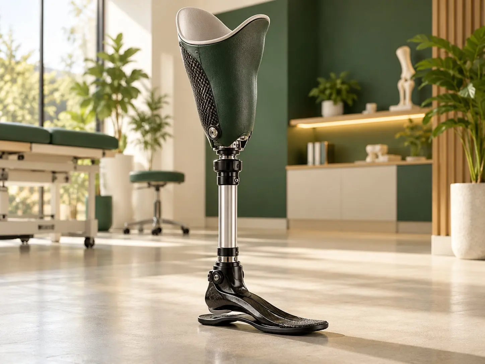
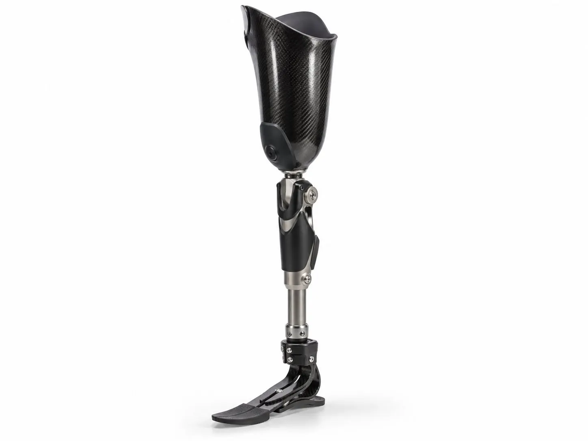
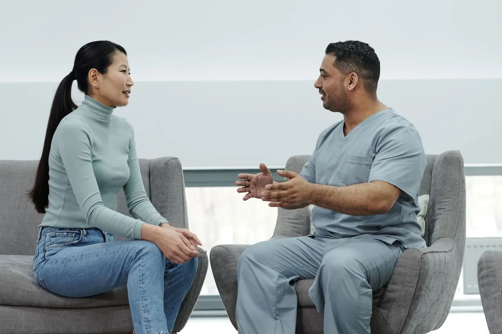

What to Expect at Your First Prosthetic Leg Fitting
A simple, step-by-step look at what happens from your first assessment to the day you walk out on your new leg.
Below-knee and above-knee artificial legs, built around a socket that fits you well. We help you stand, walk and get back to your day.

A lower limb prosthesis is an artificial leg. It replaces part of a leg that has been lost through an accident, an illness such as diabetes or poor blood flow, or a condition someone was born with.
Every prosthetic leg has three main parts:
The socket matters most. If it doesn’t fit well, even the best foot or knee won’t feel right. That’s why we spend most of our time getting the socket shape right.
We see people at different stages. You might be:
If you’re not sure whether you’re ready, come in anyway. We’ll check your limb and talk you through the options. There’s no pressure to decide on the day.
This is also called a transtibial prosthesis. Your own knee does the bending, so most people find it easier to learn to walk with this type. We focus on a socket that spreads pressure evenly and keeps the leg secure when you walk, sit and climb stairs.
This is also called a transfemoral prosthesis. It includes a prosthetic knee joint. The knee we suggest depends on how active you are, your balance and your daily routine. Some knees lock for extra safety. Others let you walk at different speeds more easily.
You don’t always need a whole new leg. If your current parts are in good shape, a new socket can make a big difference. We also check alignment, which is how the parts line up. Small alignment changes can fix problems like leaning, limping or knee pain on your other leg.
We keep the process simple and explain each step. To learn more, read our guide on what to expect at your first prosthetic leg fitting.
The first weeks take patience. Here’s what helps most people:
Some soreness is normal at first. Pain that keeps getting worse is not. Our article on whether prosthetic legs are painful explains what’s normal and what isn’t.
Please contact us if you notice any of these:
Small problems are much easier to fix early. You never need to “put up with” a leg that hurts.

It shouldn't be painful. Some soreness is common in the first few weeks while your skin and muscles get used to the socket.
Sharp pain, blisters or broken skin are signs that something needs changing. Take the leg off and contact us so we can check the fit.
It depends on how well your limb has healed and how much its shape is still changing. Once your limb is ready, casting, test fitting and the final fitting usually take a few weeks. We'll give you a clearer idea after your first assessment.
Most everyday prosthetic legs are not made for water. Water can damage the parts and the liner. If you want to shower or swim with a leg on, ask us about water-safe options.
Your limb changes shape over time, so many people need a new socket every few years. Parts like the foot and knee can last longer with good care. Regular check-ups help us spot wear early, before it causes problems.
Many people do. It depends on which leg is affected, the type of car and the driving rules where you live. Some people use an automatic car or hand controls. Please check with your doctor and with us before you start driving again.
This page gives general information only. It isn't medical advice. Please talk to your doctor or our team about your own needs.

A simple, step-by-step look at what happens from your first assessment to the day you walk out on your new leg.

Some soreness is normal at first. Real pain isn't. Here's how to tell the difference and stay comfortable in your new leg.

What a prosthetist and orthotist actually do, plus a simple checklist of what to bring, what to wear and what to ask.